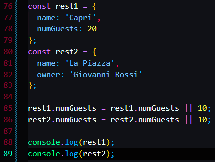

Three new logic assignment operators:
In ES 2021


The or assignment operator

It has the same effect as the one below

The logical nullish assignment operator:

it will prevent the situation when the rest1.numGuests is 0 and return 10.
The logical and assignment operator.